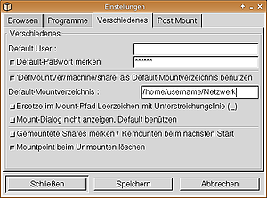
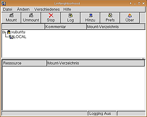

Samba Client LinNeighborhood
Archivierte Anleitung
Dieser Artikel wurde archiviert, da er - oder Teile daraus - nur noch unter einer älteren Ubuntu-Version nutzbar ist. Diese Anleitung wird vom Wiki-Team weder auf Richtigkeit überprüft noch anderweitig gepflegt. Zusätzlich wurde der Artikel für weitere Änderungen gesperrt.
Zum Verständnis dieses Artikels sind folgende Seiten hilfreich:
LinNeighborhood  ist ein Samba-Clientprogramm, das es gestattet, Freigaben interaktiv bequem anzuzeigen und einzubinden. Hierzu wird SMB genutzt. Besonders nützlich ist das Programm für Desktopumgebungen, deren Dateimanagern integrierte Funktionen fehlen, Freigaben direkt anzuzeigen (z.B. Xfce u.a.). Es ist ab Ubuntu 6.06 Dapper Drake in den Paketquellen enthalten, aber mit Ubuntu 8.04 Hardy Heron aufgrund der Abhängigkeit von libgtk1.2 und der Umstellung von SMB auf CIFS wieder entfernt worden.
ist ein Samba-Clientprogramm, das es gestattet, Freigaben interaktiv bequem anzuzeigen und einzubinden. Hierzu wird SMB genutzt. Besonders nützlich ist das Programm für Desktopumgebungen, deren Dateimanagern integrierte Funktionen fehlen, Freigaben direkt anzuzeigen (z.B. Xfce u.a.). Es ist ab Ubuntu 6.06 Dapper Drake in den Paketquellen enthalten, aber mit Ubuntu 8.04 Hardy Heron aufgrund der Abhängigkeit von libgtk1.2 und der Umstellung von SMB auf CIFS wieder entfernt worden.
Als Alternative für neuere Ubuntu-Versionen wird das Programm pyNeighborhood empfohlen. Dieses besitzt eine attraktivere grafische Oberfläche und wartet mit erweiterter Funktionalität auf. Weitere Möglichkeiten zum Einbinden von Freigaben sind unter Samba zu finden.
Hinweis:
LinNeighborhood verwendet das Hilfsprogramm smbmount. Dieses ist ab Ubuntu 8.04 Hardy Heron nicht mehr vorhanden bzw. durch mount.cifs ersetzt. An Stelle von LinNeighborhood muss dann PyNeighborhood verwendet werden.
Installation¶
Folgende Pakete müssen installiert [1] werden:
libgtk1.2
smbfs
linneighborhood (bis Feisty Fawn in universe, [2])
Nach erfolgreicher Installation kann das Programm aus dem Startmenü über "Netzwerk -> LinNeighborhood" oder mit dem Befehl LinNeighborhood gestartet [3] werden. Ein fehlender Menüeintrag [4] muss ggf. angelegt werden.
Konfiguration¶

Zuerst sollte im eigenem Homeverzeichnis ein Ordner fest- bzw. angelegt werden, in dem die Freigaben eingebunden und angezeigt werden. Grundsätzlich können aber auch andere Ordner wie /media oder /mnt genutzt werden [5] [6]. Dieser Ordner muss anschließend auch in den Voreinstellungen von LinNeighborhood (unter Verschiedenes) eingetragen werden. Auf Wunsch kann auch ein Benutzername und das zugehörige Kennwort gespeichert werden, sonst wird beides bei Bedarf abgefragt.
Während ab Ubuntu 7.10 Gutsy Gibbon keine weiteren Einstellungen erforderlich sind, müssen in älteren Ubuntu-Versionen die Rechte für SMB angepasst werden! Diese Rechte werden aber nicht in den Einstellungen von LinNeighborhood geändert, sondern systemweit in einem Terminalfenster [7, 8].
Achtung!
sudo chmod +s /usr/bin/smbmnt sudo chmod +s /usr/bin/smbumount
Benutzung¶

Diese ist eigentlich ganz einfach, wenn die Konfiguration richtig erfolgt ist. Zuerst werden in der oberen Fensterhälfte die verfügbaren Netzwerke bzw. Arbeitsgruppen angezeigt, nach einem Doppelklick konkrete Rechnernamen, nach einem weiteren Doppelklick die vorhandenen Freigaben. Falls erforderlich, wird vorher entsprechend ein Benutzername und das Passwort abgefragt. Ein Doppelklick auf eine Freigabe bindet diese (nach Rückfrage) ein.
In der unteren Fensterhälfte findet sich anschließend eine Übersicht der eingebundenen Freigaben. Ausgehängt werden die Freigaben z.B. mit der rechten Maustaste. Alternativ kann für die häufigsten Aufgaben auch die Symbolleiste verwendet werden. Über diese sind folgende Funktionen direkt erreichbar:
| LinNeighborhood | |
| Schaltfläche | Beschreibung |
| ausgewählte Freigabe einbinden | |
| ausgewählte Freigabe aushängen | |
| (letzte) Aktion abbrechen | |
| Logging starten/stoppen | |
| Rechner (Host) fest hinzufügen | |
| Voreinstellungen bearbeiten | |
- Erstellt mit Inyoka
-
 2004 – 2017 ubuntuusers.de • Einige Rechte vorbehalten
2004 – 2017 ubuntuusers.de • Einige Rechte vorbehalten
Lizenz • Kontakt • Datenschutz • Impressum • Serverstatus -
Serverhousing gespendet von